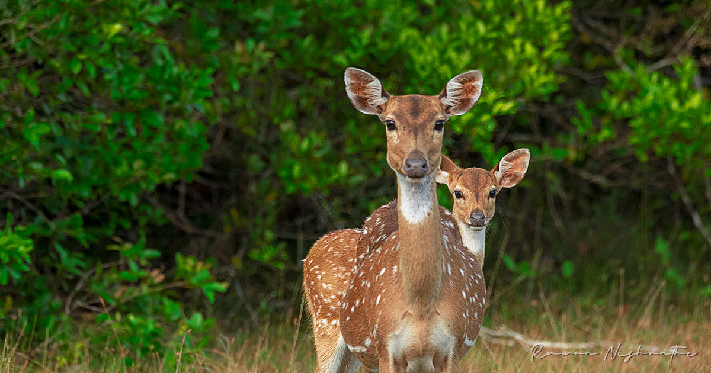

Sri Lankan Wildlife Introduction
Like many islands, Sri Lanka boasts a high number of endemic species, animals and plants found nowhere else on Earth.
The country is also regarded as one of the world's top five hotspots for biodiversity, testament to the sheer number of species which call the tear drop isle home.
Sir Lanka is a world of flora, fauna, and natural habitats.
Sri Lankan animals of all species are privy to natural preserves and parks.
As a Buddhist country, this region is home to animals that are nowhere else on the globe.
Read on to learn what you can discover in some of Sri Lanka's best national parks.

National Parks In Sri Lanka
Wasgamuwa National Park
Wasgamuwa National Park is a natural park in Sri Lanka situated in the Matale and Polonnaruwa Districts.
It was declared to protect and to make a refuge for the displaced wild animals during the Mahaweli Development Project in 1984 and is one of the four National Parks designated under the Project.
Originally it was designated as a nature reserve in 1938, and then in the early 1970s the area was regraded as a strict nature reserve.
Wasgamuwa is one of the protected areas where Sri Lankan Elephants can be seen in large herds.
It is also one of the Important Bird Areas in Sri Lanka. The name of the Wasgamuwa has derived from the words "Walas Gamuwa".
"Walasa" is Sinhala for sloth bear and "Gamuwa" means a wood. The park is situated 225 km away from Colombo.
More Info
Udawalawe National Park
Udawalawe National Park is a national park on the boundary of Sabaragamuwa and Uva Provinces in Sri Lanka. The park was created to provide a sanctuary for wild animals displaced by the construction of the Udawalawe Reservoir
on the Walawe River, as well as to protect the catchment of the reservoir.
The reserve covers 30,821 hectares (119.00 sq mi) of land area and was established on 30 June 1972.
Before the designation of the national park, the area was used for shifting cultivation (chena farming).
The farmers were gradually removed once the national park was declared. The park is 165 kilometres (103 mi) from Colombo.
Udawalawe is an important habitat for water birds and Sri Lankan elephants. It is a popular tourist destination and the third-most visited park in the country.
More Info
Maduru-Oya National Park
Maduru Oya National Park (Sinhala: මාදුරු ඔය ජාතික වනෝද්යානය ) is a national park of Sri Lanka, established under the Mahaweli development project and also acts as
a catchment of the Maduru Oya Reservoir.
The park was designated on 9 November 1983. Providing a sanctuary to wildlife, especially for elephants and protecting the immediate catchments of five reservoirs are the importance of the park. A community of Vedda people, the indigenous ethnic group
of Sri Lanka lives within the park boundary in Henanigala.
The park is situated 288 kilometres (179 mi) north-east of Colombo.
More Info
Minneriya National Park
Minneriya National Park (Sinhala: මින්නේරිය ජාතික වනෝද්යානය, Tamil: மின்னேரியா தேசிய வனம்,) is a national park in North Central Province of Sri Lanka.
The area was designated as a national park on 12 August 1997,
having been originally declared as a wildlife sanctuary in 1938. The tank is of historical importance, having been built by King Mahasen in third century AD.
forests of Matale, Polonnaruwa, and Trincomalee districts. The park earned revenue of Rs. 10.7 million in the six months ending in August 2009.
Along with Kaudulla and Girithale, Minneriya forms one of the 70 Important
Bird Areas (IBAs) of Sri Lanka. The park is situated 182 kilometres (113 mi) from Colombo.
More Info
| National Park |
Location |
Area(km^2) |
Types of Animal |
| Wilpattu |
North Central Province
North Western Province |
1317 |
Sri Lankan Leopard
Soroth Bear
Sri Lankan Elephant
etc. |
| Yala |
Southern Province
Uva Province |
979 |
Sri Lankan Leopard
Soroth Bear
Sri Lankan Elephant
etc. |
| Maduru Oya |
Eastern Province
Uva Province |
588 |
Sri Lankan Leopard
Soroth Bear
Sri Lankan Elephant
etc. |
| Somawathiya |
Eastern Province
North Central Province |
376 |
Soroth Bear
Sri Lankan Elephant
etc. |
| Wasgamuwa |
Central Province
North Central Province |
371 |
Sri Lankan Leopard
Soroth Bear
Sri Lankan Elephant
etc. |
| Udawalawe |
Uva Province
Sabaragamuwa Province |
308 |
Soroth Bear
Sri Lankan Elephant
etc. |
| Minneriya |
North Central Province |
89 |
Sri Lankan Elephant
etc. |